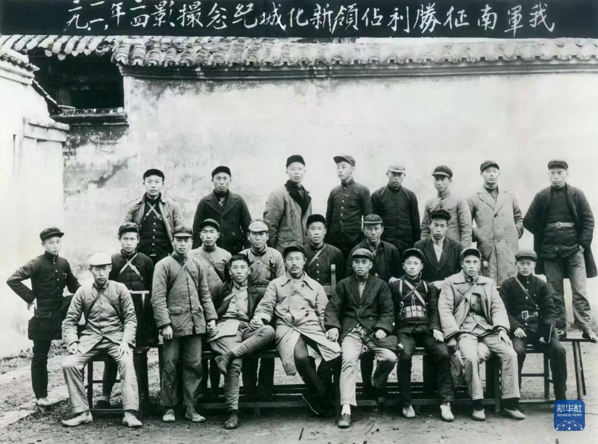

长征

山河为证 信仰不息
开启征途
序 · 山河印记
1934—1936一段征途，
一种永恒的精神

1934年10月，中央红军在第五次反“围剿”失利后开始战略转移。各路红军历经围追堵截，渡过江河、翻越雪山、穿越草地。1936年10月，红军三大主力在会宁、将台堡等地先后会师，长征胜利结束。
在封锁、追击与物资匮乏中，支撑队伍不断前进的，是对理想的坚守、面对困境的毅力，以及并肩同行的团结互助。长征使中国革命走过危急关头，也留下了超越行程的精神力量。
从长征纪事中回望关键抉择，在重走长征中体验征途艰辛，走进精神传承理解当代实践，再向山河邮局寄出一封信。循着历史的足迹，以四种方式重新走近这段征途。
四章导览
以四种方式，重新走近长征
回顾长征历程，体验征途艰辛，走近当代传承，写下对先辈的敬意。
01 / 铭记历史
读懂那些改变山河的抉择与足迹。 走进历史
长征纪事
翻开历史的长卷，沿着九个重要节点，
读懂那些改变山河的抉择与足迹。 走进历史

02 / 重温征程
在雪山与险途中，理解每一步的重量。 六站地图 · 故事互动 踏上征途
重走长征
从屏幕前走进山川之间。
在雪山与险途中，理解每一步的重量。 六站地图 · 故事互动 踏上征途

03 / 赓续精神
再想一想我们可以怎样接过这一程。 走近今天
精神传承
从真实人物的选择，读到今天的集体行动，
再想一想我们可以怎样接过这一程。 走近今天

04 / 寄语先辈
写成一封来自今天的信。 写下一封信
山河邮局
隔着九十年的山河，把未说出口的敬意，
写成一封来自今天的信。 写下一封信

尾声
征途有尽，回响无穷

长征的故事已经写下，
而新的征途，
正在你我脚下延续。